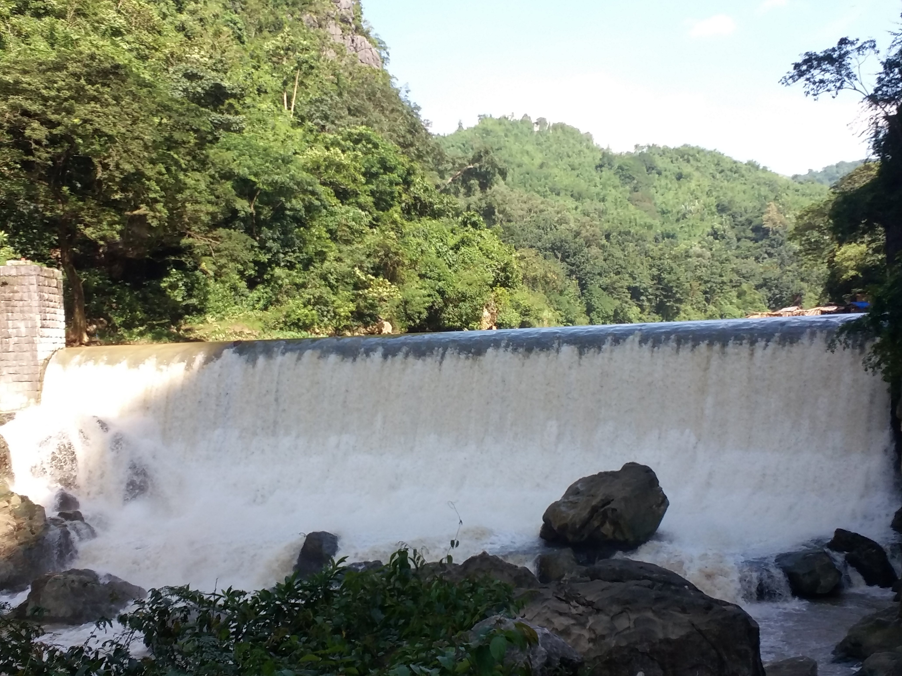

The town of Montalban was renamed recently after its most illustrious resident, Senate President Eulogio “Amang” Rodriguez. Although he has become an important political figure in local government and the Senate, Amang had humble beginnings as a farmer. As a famer, he built a house for his family near his farm.
The huge track of land behind his old home has become part of a cemetery. The Rodriguez Ancestral House has been turned into a private museum showcasing the mementoes and collections of the longest serving senate president.
Quartered in the ancestral house are vintage photographs, personal effects, commissioned furniture sets and paintings. We like that one particular painting near the staircase which depicts Amang as a young farmer.
The stately bahay-na-bato has a cavernous silong that served as storage for the season’s harvest. Amang’s official vehicle while serving as Senate President, still bearing the plate number 3 is displayed in the silong near the zaguan.
A few walks across the Rodriguez Ancestral House is a statue dedicated to the hero of the victorious Battle of San Mateo. During the Philippine-American War, General Licerio Geronimo led a band of guerilla that defeated the Americans and killed the proud General Henry Lawton -the highest ranking American officer to have fallen in battle in either Spanish-American and Philippine-American Wars.
General Lawton was the same officer who captured the elusive Indian rebel Geronimo. It was ironic that in the middle of his battles he met his death in the hands of a Filipino general bearing the same name of his former captive. But it is more ironic for Filipinos to have named a plaza and street in Manila and in Fort Bonifacio to the defeated American general while the heroic General Geronimo is remembered only with a single statue in an obscure location unnoticed, and overshadowed by a monstrous covered court. We feel that a lot needs to be arranged here.

Bonifacio and the Japanese who took refuge in caves found a sanctuary in the Montalban Gorge. The townspeople would usually retreat to the mountains of Montalban which were relatively accessible from the lowlands. A year before the start of the 1896 Revolution, Andres Binofacio with eight men fled to the mountains of Montalban, to Pamitinan Cave on a Good Friday
The Pamitinan cave is just one of the several cave systems in the Montalban gorge. Other caves are said to be where Japanese soldiers have retreated and spent their last defense during the final days of World War II. A marker by the cave entrance is visible from the trail. Guided tours to these historic sites are arranged at the Montalban Tourism Office.
While Bonifacio and the Japanese who took refuge in caves found a sanctuary in the Montalban Gorge, the legendary Bernardo Carpio have to use his great strength in dealing with the curse of being trapped in two great rocks locally called as the naguumpugang bato to keep the mountains from crashing him down.
One of Montalban’s attractions is Wawa Dam. Below the narrow gap between the majestic limestone walls at foot of the mountains, Wawa Dam was constructed by the Americans in 1909 as the primary water source for Manila. The dam ceased operation in the 1960’s when the Ipo-La Mesa-Angat watershed was established.
Traveling to Wawa Dam took us to an easy drive across the well-paved roads of San Mateo and then to the mountain road of Rodriguez until you reached, literally the end of the road at Barangay San Rafael.
Where the road ended, the hiking began. The hike to Wawa Dam involved us walking on a rocky ascending trail with steep drop-offs on one side and bamboo and nipa houses on the other. These dwellings along the sides of the trail made brisk business by selling turon and samalamig to hikers.
As the winding mountain trail became narrower, we could see from one side the steep slope and the running river further enhanced by huge white boulders where the locals have built makeshift huts of bamboo and nipa that tourists and campers could use for a minimal rental fee.
A few walks further, you'll have a view of the amazing Wawa Dam also with huts huddled close together at the foot of dam looking similar to the luncheon scene at Villa Escudero. Later on the trip you would hike down to get close to the dam but you can continue following the trail to the dam’s reservoir.
The dam is like a more rustic version of the man-made falls of the popular Villa Escudero. Although the trip down to the picnic site close to foot of the dam is arduous but it cost practically nothing to enjoy the man-made falls.
The water pouring from the reservoir in the upper lake to the dam wall and the gurgling water around the primordial rock boulders on the river provide a refreshing treat to the senses and to the spirit.